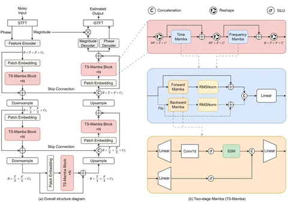

Заключительный пост трилогии о Mamba. Впервые эту архитектуру упомянули в контексте задач Speech Enhancement в статье «An Investigation of Incorporating Mamba for Speech Enhancement».
В этой работе модель устроена довольно просто: waveform domain → Short-Time Fourier Transform (STFT) для перехода Time-Frequency domain → Encoder → TF-Mamba → Decoder → Inverse STFT → waveform domain. Авторы сравнивают Mamba с трансформерами и показывают, что достигают того же качества, но с меньшим числом FLOPs-операций и количеством параметров.
Использование Mamba-блоков продолжили развивать в другой статье: «Mamba-SEUNet: Mamba UNet for Monaural Speech Enhancement», где их добавляют в U-Net на этапе обработки скрытых представлений для улавливания как локальных, так и глобальных зависимостей. Каждый Mamba-блок — двунаправленный, что позволяет использовать информацию о будущем и прошлом. Архитектура модели стандартная для U-Net: состоит из нескольких downsample- и затем upsample-блоков со skip-connection между ними, как показано на картинке.
Рассмотрим Mamba-блоки (TS-Mamba) подробнее. Как сказано ранее, они двунаправленные: входное представление параллельно обрабатывается блоками Forward Mamba и Backward Mamba. Постпроцессинг (RMSNorm) применяется к выходам обоих блоков, затем результаты конкатенируются и прогоняются через линейный слой. Формально каждый Mamba-блок (forwardи backward) такой же, как и в предыдущих работах. Отметим, что авторы используют Mamba-блоки и по времени, и по частотам, чтобы учитывать и временные, и частотные зависимости.
Для экспериментов выбирают четыре варианта модели с разным количеством параметров (зависит от размерности C1 и количества TS-Mamba-блоков N):
— Mamba-SEUNet (XS) — 0.99M параметров;
— Mamba-SEUNet (S) — 1.88M параметров;
— Mamba-SEUNet (M) — 3.78M параметров;
— Mamba-SEUNet (L) — 6.28M параметров.
Их сравнивают c такими SOTA-моделями, как MP-SENet и SEMamba (упомянута в начале поста) на датасете VCTK+DEMAND. Согласно замерам маленькая модель Mamba-SEUNet (XS) показывает сопоставимое качество по метрикам CSIG (4.75), CBAK (3.95) и COVL (4.23), имея вдвое меньше параметров и в разы меньше FLOPs-операций.
Для сравнения Mamba-блоков с conformer- и transformer-блоками авторы используют текущий U-Net, в котором заменяют TS-Mamba на conformer и transformer соответственно. Замеры показывают, что Mamba-SEUNet сравним по качеству с U-Net’ами, у которых conformer или transformer вместо Mamba-блоков. Но Mamba-SEUNet имеет меньше FLOPS-операций, а по количеству параметров меньше или сравнимо с U-Net с conformer и transformer. Код модели выложен в открытый доступ.
Екатерина Кузина
